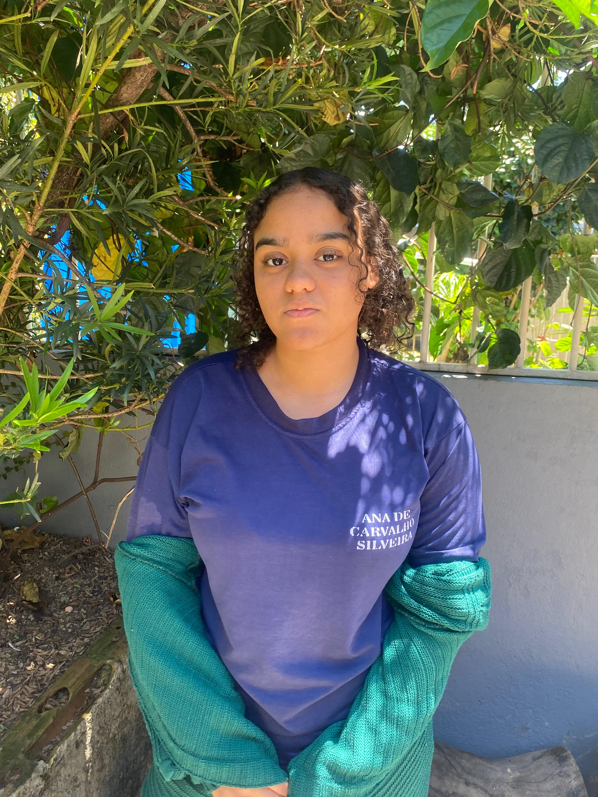

No curso, Julya demonstra grande interesse na área de programação, com destaque para a linguagem Java, que desperta sua curiosidade e vontade de aprender mais. Além disso, possui noções de robótica, o que contribui para compreender melhor como a tecnologia pode ser aplicada de forma prática na resolução de problemas. Ela acredita que entender o impacto da tecnologia e da programação na sociedade é fundamental, já que essas áreas transformam constantemente a forma como vivemos e trabalhamos. Sempre que conclui um trabalho, sente satisfação em perceber o quanto evoluiu e aprendeu durante o processo. Embora reconheça que talvez ainda precise se aprofundar em alguns temas, demonstra disposição para continuar aprendendo. Estudar programação tem sido uma experiência valiosa, ajudando-a a descobrir coisas que antes não sabia e ampliando seus horizontes para o futuro.